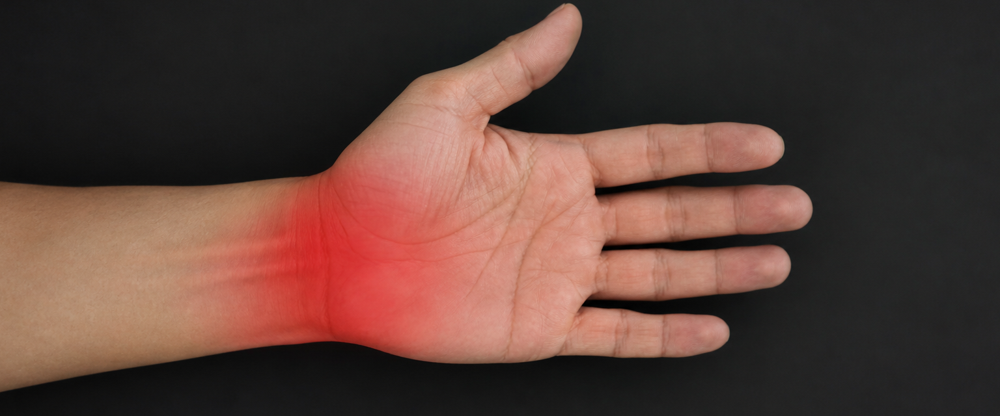
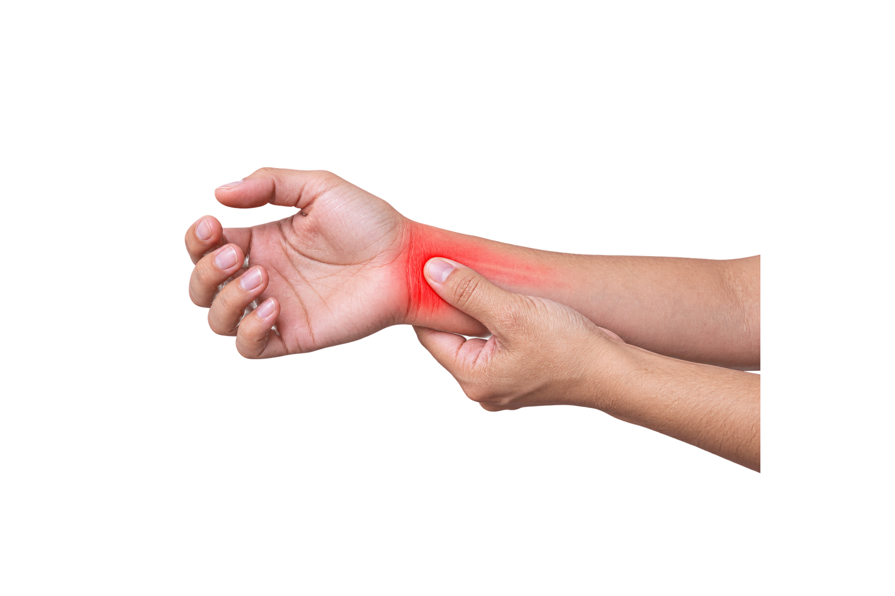
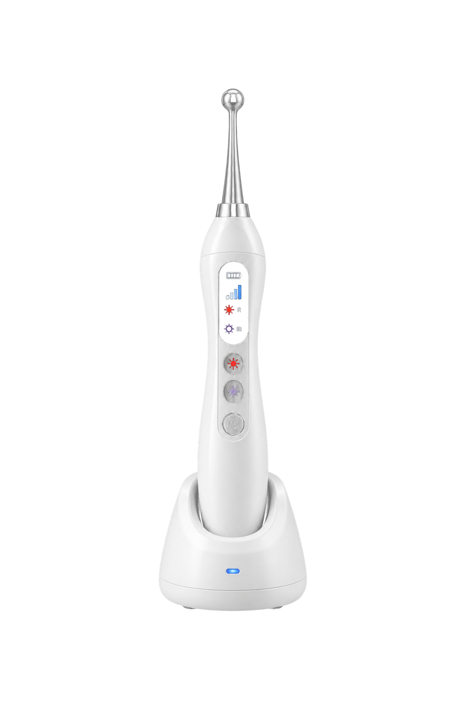

Túnel
do carpo
Sente dor, formigamento ou fraqueza nas mãos?
Arrasta pro lado

É uma condição causada pela compressão do nervo mediano no punho. Os sintomas incluem dormência, formigamento e fraqueza ao segurar objetos.
Como a laserterapia ajuda?
✓ Reduz a inflamação
✓ Diminui a dor e o inchaço
✓ Melhora a circulação local
✓ Estimula a regeneração nervosa
Alívio rápido dos sintomas;
Tratamento não invasivo e indolor;
Recuperação funcional mais eficaz;
Maior qualidade de vida no dia a dia;

O poder da luz
Pode ser usada sozinha ou junto de outros tratamentos, ajudando a evitar intervenções mais invasivas em muitos casos.

Chega de sofrer com dor e formigamento nas mãos!
COMENTE "EU QUERO" e receba mais sobre a laserterapia para essa condição.
LASER

SINTOMAS

TERAPIA
LASER